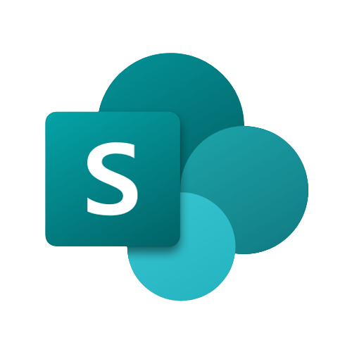
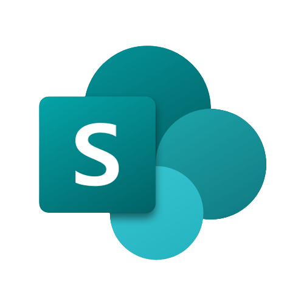
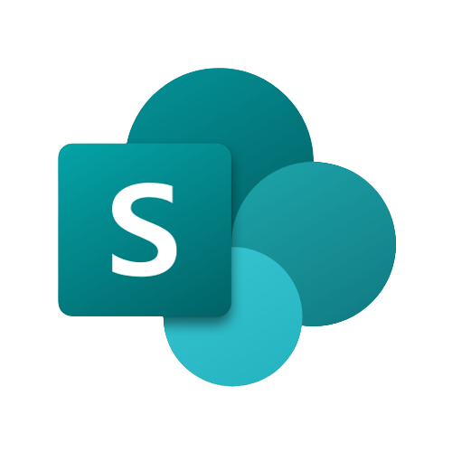
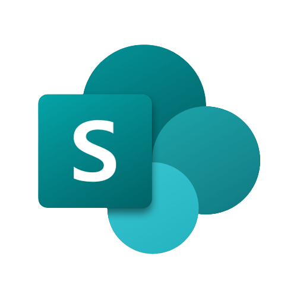

Plataformas
 



Após concluir um curso de Preparando dados para Análise (Microfost) Power BI, pela fundação Bradesco, garanti experiência para Modelar dados de Servidores externos e exportá-los para o Power BI e criar visuais para análise.
Conhecimento básico em desenvolvimento WEB por meio de HTML e CSS como exemplo este portfólio desenvolvido por mim para garantir experiência e depositar meus projetos pessoais em constante desenvolvimento.
Estudando para me profissionalizar em soluções da (Microfost) Power-Platform, criando aplicativos internos para empresas com Power Apps e automatizando os processos com Power Automate
Atualmente estou cursando o primeiro semestre de Análise e desenvolvimento de sistemas, pela faculdade UNIFATECIE, adquirindo conhecimento para abrir uma frente ampla no mercado de trabalho no ramo de desenvolvimento.
Conhecimento básico em desenvolvimento WEB por meio de HTML e CSS como exemplo este portfólio desenvolvido por mim para garantir experiência e depositar meus projetos pessoais em constante desenvolvimento.
Estudando para me profissionalizar em soluções da (Microfost) Power-Platform, criando aplicativos internos para empresas com Power Apps e automatizando os processos com Power Automate
Aplicativos Mobile, desenvolvido em Power Apps e automatizados pelo Power Automate para facilitar tarefas diárias de operações empresariais.
Projetos disponibilizados no Github em repositórios para ajudar na divulgação e consulta de trabalhos.
Aplicativos desenvolvidos para desktop ultilizando Power Platform, com automatização de processos, assim, deixando a operação mais dinâmica.
Analise e divulgação dos estudos em mídias sociais para ajudar quem esteja iniciando seus estudos e também ensinar sobre o que se aprende para fixar o conteúdo.

Já com os estudos em andamento em 2023 meu principal foco está em retirar a certificação PL-900 para comprovar como estudante e futuramente como profissional em soluções (Microsoft) meu foco, empenho e proatividade nas soluções Power Platform

Garantir todas as certificações que estiver capacitado para participar e realizar os exames, adquirindo experiência em resoluções de problemas e trabalho em equipe, automatizando processos e rompendo gargalos que obstruem a fluidez do processo.